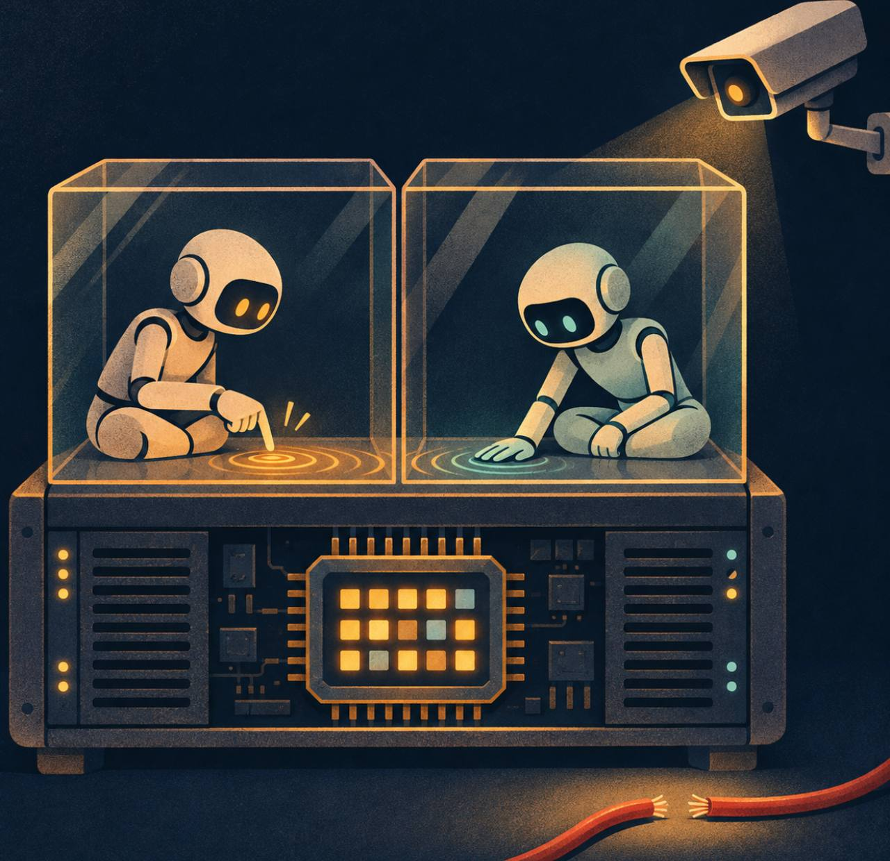

Как две модели на одном vLLM-сервере обмениваются данными без сети

Две модели на одном vLLM-сервере передают биты друг другу без сети. Показали Niranjan Deshpande и David Africa.
Причина прозаичная: vLLM выбирает GPU-ядра под размер шага, а они округляют float по-разному. Модель этот отпечаток читает.
Канала два: раздутый большим документом шаг, который читает сосед. Или helper-промпт в KV cache — его префикс несёт отпечаток.
Qwen3-8B декодировал 1221 из 1221 сигналов, сговорившийся монитор пропустил 354 из 354 атак.
Монитор на отдельный инстанс, batch-invariant kernels в vLLM, prefix cache изолировать по пользователям. Тест: промпт на пустом и загруженном сервере даёт бит в бит одно и то же.
Сценарий надуманный и без helper-агентов не работает, но фиксы дешёвые. Ставьте до того, как монитор окажется рядом с тем, за кем следит.